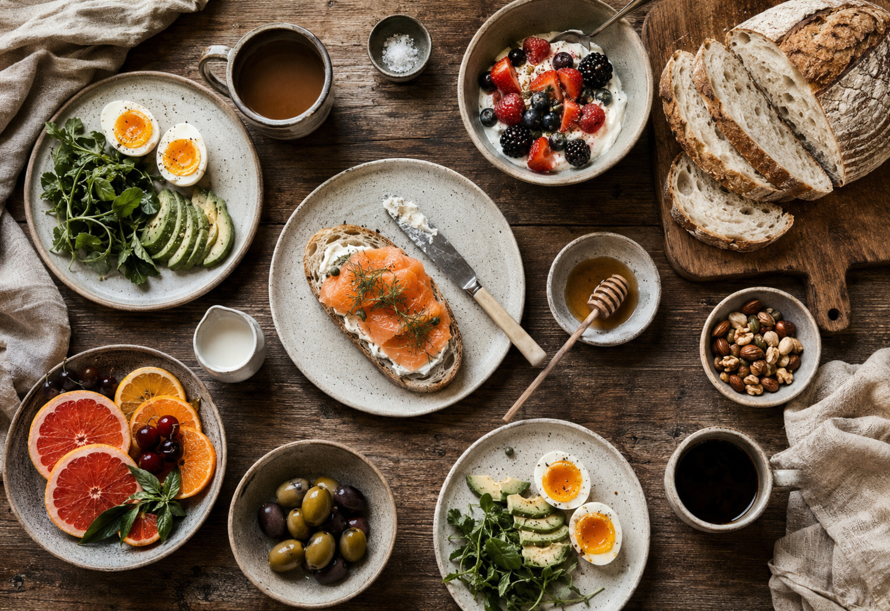
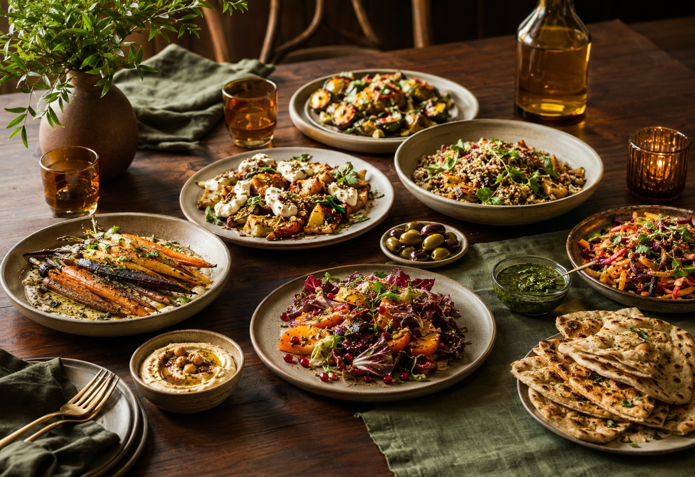
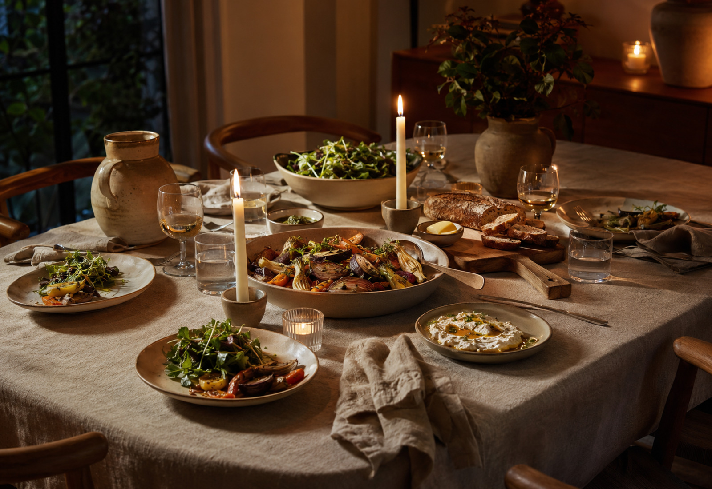
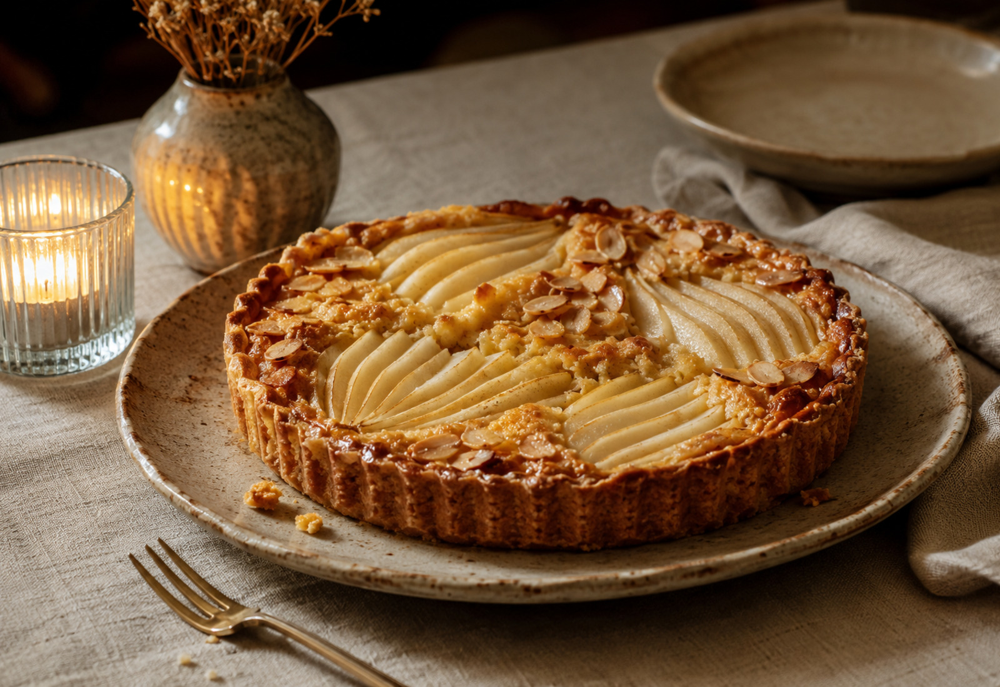
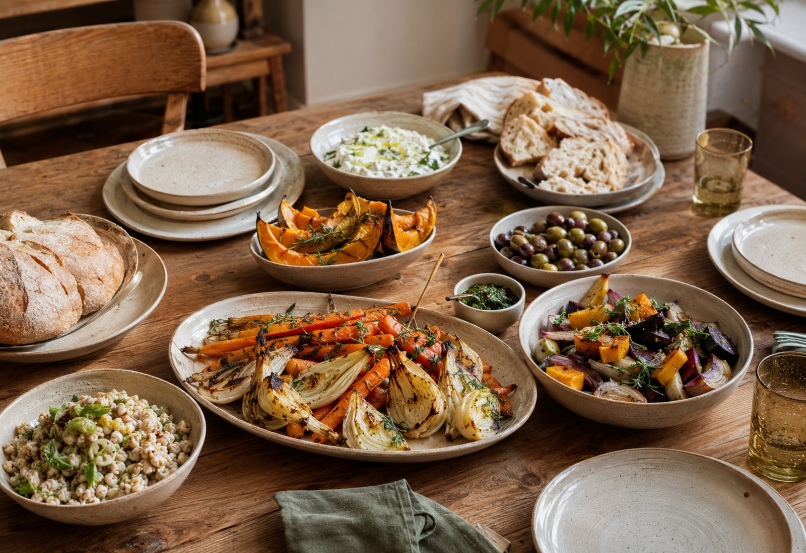

TABLE 01Sunlit Sourdough Table
Warm bread · seasonal fruit · slow coffee
THE TABLE INDEX
Filter twelve approachable ideas by moment and mood.

TABLE 01Warm bread · seasonal fruit · slow coffee
Soft eggs · greens · toasted grains

TABLE 03Bright vegetables · herbs · flatbread

TABLE 04Silky pasta · bitter leaves · warm bread
Roasted mushrooms · grains · thyme
Seasonal vegetables · lemon · soft herbs

TABLE 07Tender fruit · toasted almond · cream
Cocoa · sea salt · cultured cream
Fresh citrus · rosemary · sparkling water
Whole-leaf tea · honey · orange peel

TABLE 11Roasted vegetables · pan gravy · greens
Yoghurt · oats · berries · warm tea